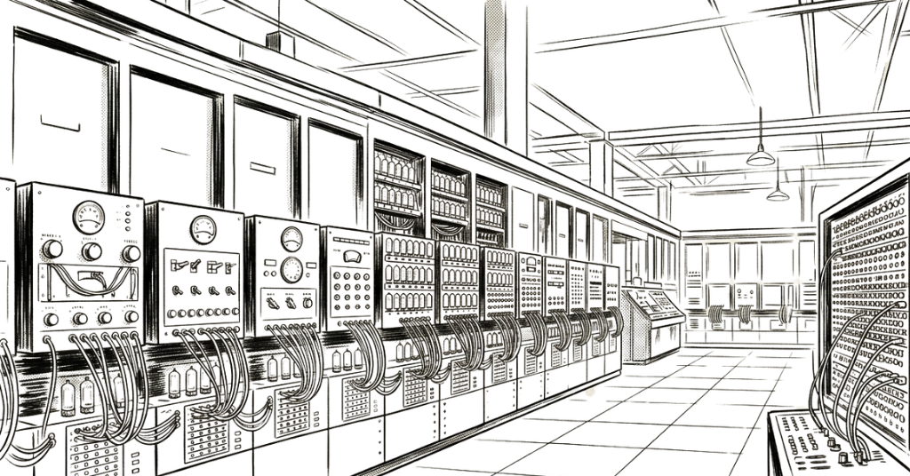

EL ENIAC SE PRESENTA AL MUNDO

Los ingenieros John W. Mauchly y J. Presper Eckert son celebrados como los creadores del primer gran ordenador electrónico.
Las primeras programadoras del mundo.
-Reivindicamos su impacto en la historia de la computación-
Conoce másEn 1945, seis mujeres escribieron el futuro con sus manos. Kathleen McNulty, Jean Jennings, Betty Snyder, Marlyn Wescoff, Ruth Lichterman y Frances Bilas cablearon, codificaron y ejecutaron los primeros programas de la historia de la computación moderna. El mundo aplaudió la máquina pero silenció sus nombres.
Durante décadas, la fotografía más famosa del ENIAC circuló sin pie de foto. Nadie preguntó quiénes eran las mujeres que aparecían en ella. Se asumió que eran modelos, decoración, fondo.
Este sitio existe para no olvidar. Para devolver el nombre a quienes el relato oficial convirtió en sombras. Porque la historia de la tecnología no puede contarse bien si se cuenta a medias.




John Mauchly y John Presper Eckert diseñaron la ENIAC en la Universidad de Pensilvania para el ejército estadounidense con el objetivo de calcular trayectorias balísticas.
Fue uno de los primeros ordenadores electrónicos de gran escala. Fue creado para realizar cálculos complejos miles de veces más rápido que cualquier humano.
ENIAC ocupaba 167 metros cuadrados y pesaba aproximadamente 27 toneladas. Era una de las computadoras más grandes construidas hasta ese momento, distribuyéndose a lo largo de una gran sala.
ENIAC contaba con 17,468 tubos de vacío, 70,000 resistencias, 10,000 condensadores y 7,200 diodos de cristal.
Cada tubo de vacío funcionaba como un interruptor electrónico, permitiendo que los circuitos realizaran operaciones lógicas.
En lugar de utilizar métodos mecánicos o electromagnéticos para representar datos, ENIAC usaba pulsos eléctricos para manipular la información en binario (1 y 0).
Para programar ENIAC, sus operadoras debían manipular más de 6,000 interruptores y conectar un entramado de cables de manera física.
Cada nueva tarea requería una reconfiguración manual, lo que podía tomar días o incluso semanas. Este proceso era tedioso, lo que impulsó el desarrollo de un programación y la automatización de procesos.
Podía realizar 5,000 sumas o 300 multiplicaciones por segundo, algo insignificante hoy en día pero revolucionario para la época.
Consumía aproximadamente 150 kW a 160 kW, generando apagones ocasionales en la ciudad de Filadelfia.
Para evitar el sobrecalentamiento, era necesario instalar sistemas de ventilación avanzados y en ocasiones incluso abrir puertas y ventanas para permitir la disipación del calor.
Se estima que cada 48 horas una o varias de estas válvulas fallaban, interrumpiendo el funcionamiento del sistema. Comenzaron a dejarlo encedido continuamente para minimizar estos problemas.
Los ingenieros John W. Mauchly y J. Presper Eckert son celebrados como los creadores del primer gran ordenador electrónico.

En muchas fotografías aparecen junto al ENIAC.
Pero son descritas como operadoras o modelos.
Incluso se utilizó el término "refrigerator ladies".
La historia se reescribe
En los años 80, la programadora Kathy Kleiman encontró una fotografía del ENIAC con varias mujeres junto a la máquina.
Cuando preguntó quiénes eran, le dijeron que solo eran modelos.
Pero investigó más y descubrió la verdad: habían sido las programadoras del ENIAC.
No estaba descubriendo un detalle olvidado.
Estaba recuperando el origen de la programación.


Las programadoras del ENIAC fueron incluidas en el Women in Technology International Hall of Fame.
Décadas después, la historia empezaba a corregirse.

Llevamos décadas oyendo hablar del ENIAC como si lo hubieran construido solos dos ingenieros. Pero vosotras estabais ahí. ¿Cómo acabasteis trabajando en ese proyecto?

El Ejército necesitaba gente que supiera matemáticas y buscaba mujeres con carrera universitaria para calcular tablas de tiro. Me enteré por un anuncio, me presenté y me contrataron. Estuve haciendo esos cálculos a mano durante meses, ecuación por ecuación, antes de que nos asignaran al ENIAC. Una sola trayectoria balística te llevaba más de cuarenta horas.

Yo estaba en el Laboratorio Balístico de Aberdeen haciendo lo mismo, calcular con máquinas de escritorio. Un día nos dijeron que había un proyecto nuevo, algo mucho más grande, y que buscaban a las mejores. Cuando llegué al Moore School y vi aquella máquina por primera vez... no sé, era difícil hacerse a la idea de lo que tenías delante.
Y una vez allí, ¿cómo se programaba aquello? No había software, no había lenguajes de programación...

No había manuales. Solo los planos de ingeniería, y a partir de ahí tenías que entender tú cómo funcionaba cada pieza. Para ejecutar un programa conectabas físicamente los módulos con cables, como una centralita de teléfonos enorme. Podías tirarte días configurando un único cálculo, y si algo no cuadraba, ibas tubo a tubo buscando el fallo.

La primera demostración pública fue en febrero del 46. La máquina resolvió en segundos lo que a nosotras nos habría llevado horas. La sala se quedó en silencio. Pero cuando los periodistas preguntaron quién había programado el ENIAC, las cámaras fueron directas a los ingenieros. Nosotras estábamos a dos metros y nadie nos preguntó nada.
Han pasado cuarenta años desde entonces. ¿Cómo habéis vivido ese borrado de la historia?

Al principio pensé que era cosa del momento, que ya se corregiría. Pero no. Lo que más me duele no es que nos ignoraran a nosotras, sino que las chicas que vinieron después no tuvieron ningún referente. Nadie les contó que la programación la inventamos mujeres.

Después del ENIAC seguí trabajando en el sector, formando a los primeros técnicos del UNIVAC, el ordenador comercial que vino después. Pero cuando mis hijos estudiaban informática, en los libros de texto no aparecíamos por ningún sitio. Es una sensación muy rara, saber que estuviste ahí y que nadie lo recuerde.
Para cerrar, ¿qué les diríais a las mujeres que hoy se están abriendo camino en la tecnología?
Que no esperen que nadie les dé permiso. Nosotras tampoco lo pedimos. Simplemente llegamos, aprendimos y lo hicimos mejor que nadie. Luego la historia nos ignoró, sí. Pero la historia también se puede corregir, y ya iba siendo hora.